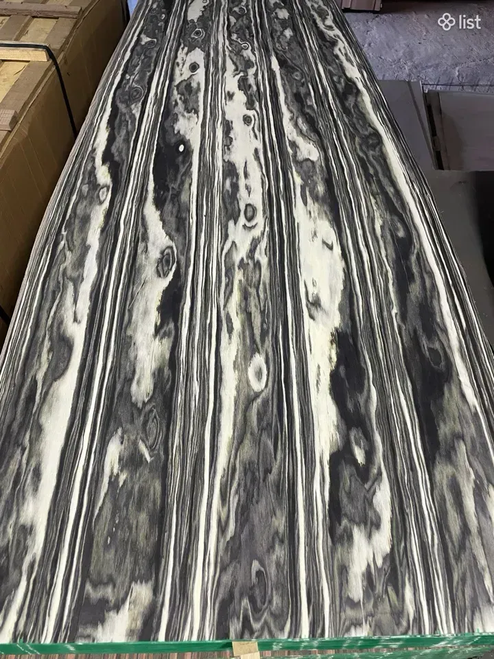
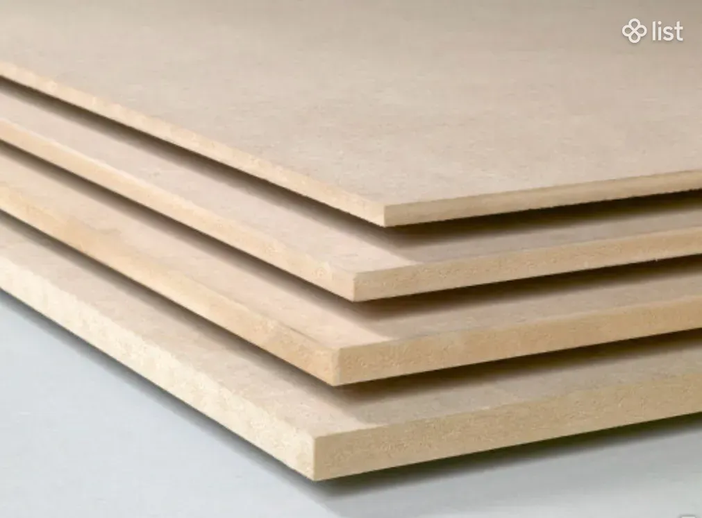
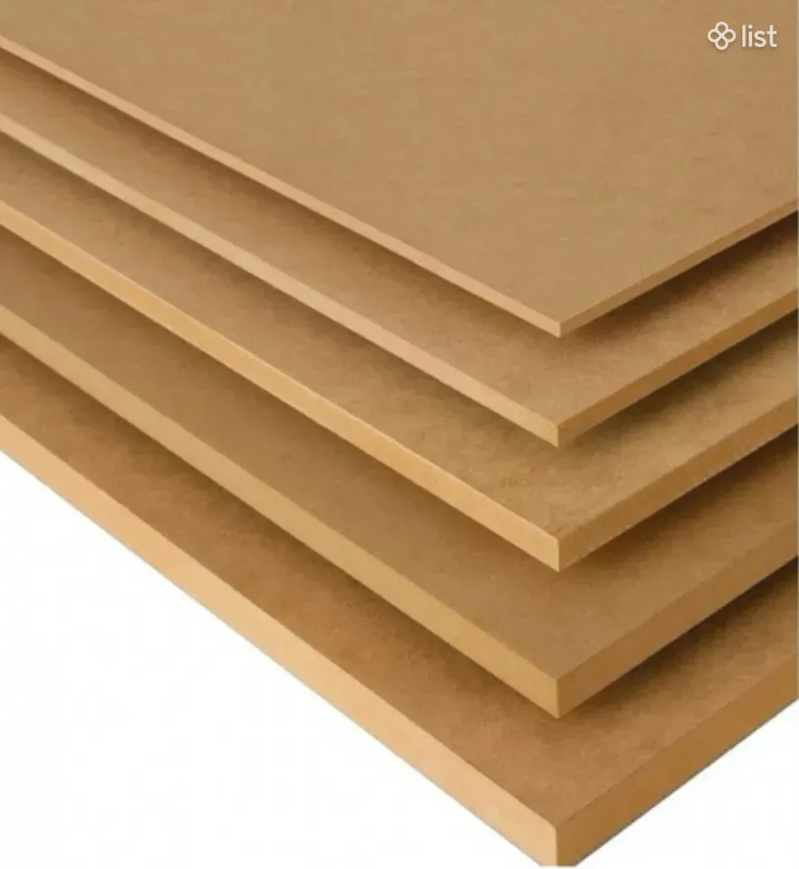
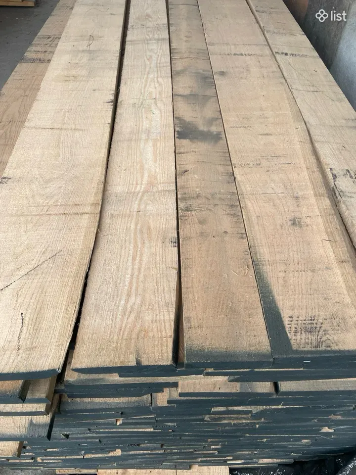
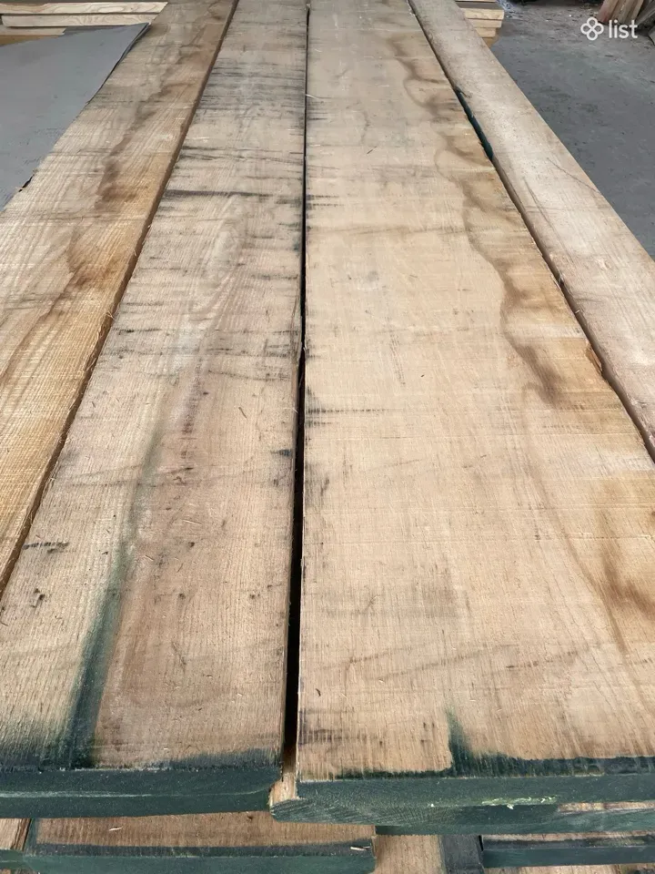
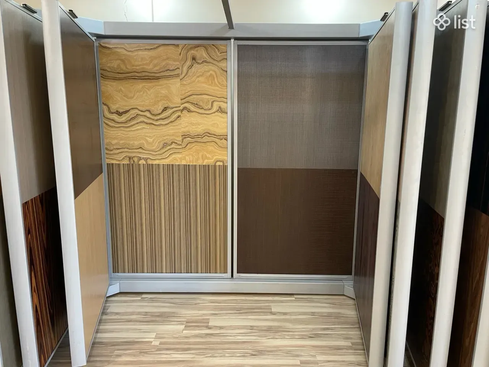
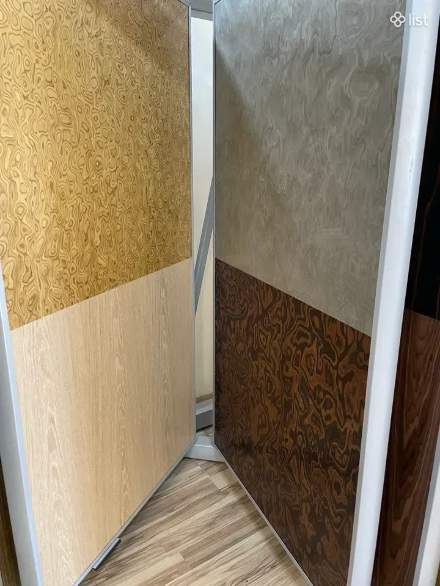

Ինժեներական շպոն՝ կրկնվող, կանխատեսելի տեքստուրայով, ՄԴՖ թիթեղներ, ճկվող ֆաներա և իտալական կաղնու փայտ։Инженерный шпон с повторяемой, предсказуемой текстурой, плиты МДФ, гибкая фанера и итальянская дубовая древесина.

Բնական շպոնի յուրաքանչյուր թերթ տարբեր է։ Ինժեներականը պատրաստվում է վերահսկվող տեքստուրայով, այնպես որ մեծ պատվերում գույնն ու նախշը չեն «ցատկում»։Каждый лист натурального шпона разный. Инженерный делается с управляемой текстурой, поэтому на большом заказе цвет и рисунок не «скачут».






Գրեք՝ ինչ տեսակ և ինչ ծավալ է պետք, կասենք առկայությունն ու գինը։Напишите, какой вид и какой объём нужен — скажем наличие и цену.